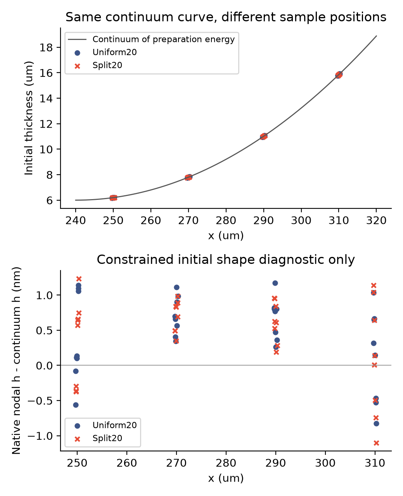

初始形状补充检查 · 2026-11-13 15:55 UTC
节点算得准，
单元场也可能看起来不同。
这里只报告初始状态的独立检查。同分辨率的新布局对照正在计算：第一组200微秒已完成，小时间步组尚未结束。时间配对与最终布局敏感性还没有验收。
为什么要再查初始状态？
上一轮加密背景后，运动仍明显依赖布局。我们发现局部布局和均匀布局在细区使用了不同的扰动索引，因此安排了两边都为20微米、144粒子的对照。48个细区节点的最大位置差为0.471微米，物理参数与准备程序保持相同。
在判断运动原因之前，先问一个简单的问题：它们一开始是不是已经算出了明显不同的形状？
节点处：都很接近同一条圆弧
从当前定表活准备能量可推导出一条受约束的平衡圆弧。我们只用它事后检查，没有把解析形状写入求解器。两组边缘节点的初始膜厚与圆弧相差约0.71纳米RMS，下图保留了实际采样位置。

为什么单元场却能差128纳米？
可以想象两把刻度位置稍有不同的尺：每个刻度读数都很准，但若把读数涂满它周围的小格子，格子边界附近仍会显示差异。
这里做了相同的检查：原生初始膜厚按单元比较，差异为128.46纳米RMS；即使从完全相同的解析圆弧取值，再按两种实际单元比较，也会得到128.47纳米。两个差异场之间的剩余只有0.16纳米RMS。
| 检查对象 | RMS | 它回答什么 |
|---|---|---|
| 节点值对解析圆弧 | 约0.71纳米 | 准备出的节点形状是否接近该连续模型 |
| 两组原生单元场 | 128.46纳米 | 不同位置取值后，分片常量场相差多少 |
| 同一圆弧的两组单元表示 | 128.47纳米 | 仅采样位置和单元表示能产生多大差异 |
| 两种差异场的剩余 | 0.16纳米 | 上述代数分解中未被圆弧采样重现的部分 |
这说明什么，还没说明什么？
不能把初始单元场差异直接当成节点形状误差。这让下一步的运动诊断更有针对性，但没有证明微小扰动就是最终位移差异的原因。原来的膜厚变化、位移、时间和空间门槛全部保留。
随后必须等新布局自己的时间配对结束，才能解释同分辨率布局差异。完整空间收敛、物理接口通量和实验验证仍待完成。此前四项未通过的规则布局面积差分检查也没有改判。